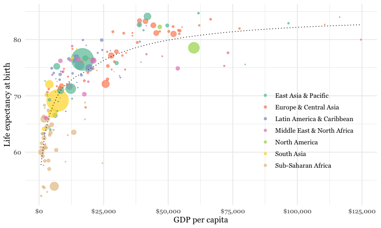
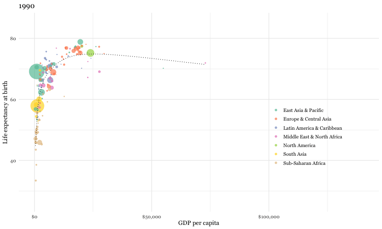
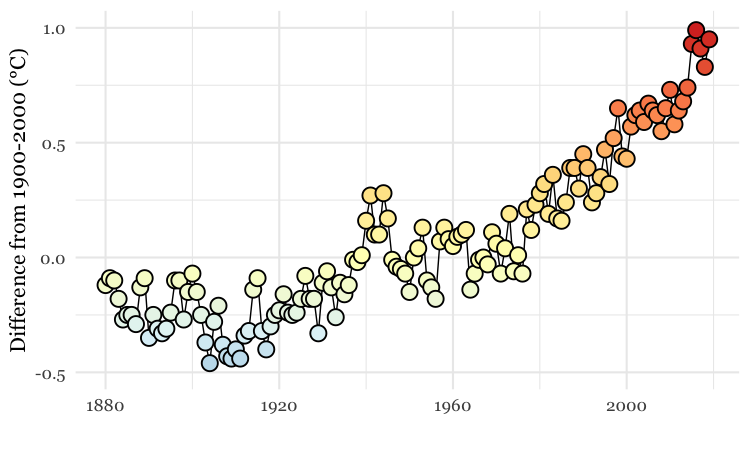
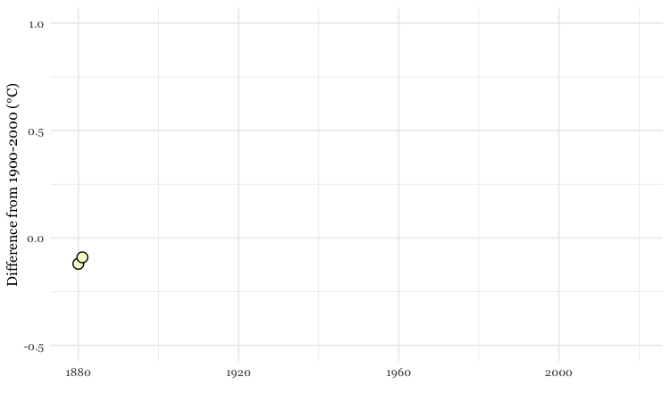
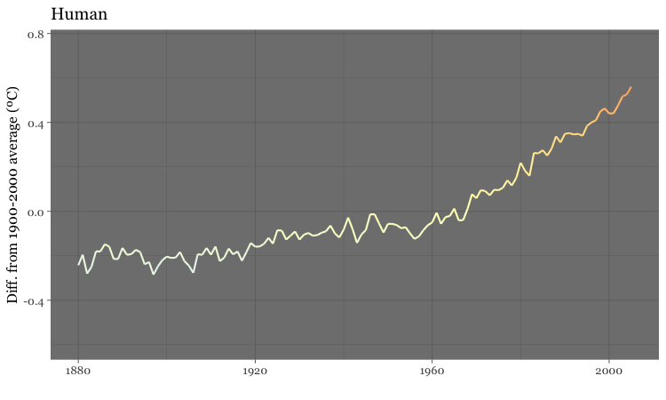

In today’s class, we will make animated GIFs and videos from charts made in R with ggplot2, using the gganimate package.
Download the data for this session from here, unzip the folder and place it on your desktop. It contains the following folders and files:
nations.csv Data from the World Bank Indicators portal, as used previously.warming.csv National Oceanic and Atmospheric Administration data on the annual average global temperature, from 1880 to 2019.yearvalue Average global temperature, compared to average from 1900-2000.simulations.csv Data from NASA simulations of historical temperatures, estimating the effect of natural and human influences on climate, processed from the raw data used for this piece from Bloomberg News. Contains the following variables:yeartype Natural or Humanvalue Global average temperature from the simulation, relative to average simulated value from 1990-2000.Launch RStudio, create a new RScript, and set the working directory to the working folder. Save the script as animations.R.
Install gganimate from the Packages tab or by running the following code
# install gganimate
install.packages("gganimate", dependencies = TRUE)
(You may find as we work through today’s code that you need to install additional packages to make gganimate work correctly.)
# load required packages
library(readr)
library(dplyr)
library(ggplot2)
library(scales)
library(gganimate)
Apart from gganimate, we have encountered all of these packages in previous weeks.
Previously, we made the following chart, showing GDP per capita, life expectancy at birth and population for the world’s nations in 2017:

This was the code to generate that chart:
# load data
nations <- read_csv("nations.csv")
# filter for 2017 data only
nations2017 <- nations %>%
filter(year == 2017)
# make bubble chart
ggplot(nations2017, aes(x = gdp_percap, y = life_expect)) +
xlab("GDP per capita") +
ylab("Life expectancy at birth") +
theme_minimal(base_size = 12, base_family = "Georgia") +
geom_point(aes(size = population, color = region), alpha = 0.7) +
scale_size_area(guide = FALSE, max_size = 15) +
scale_x_continuous(labels = dollar) +
stat_smooth(formula = y ~ log10(x), se = FALSE, size = 0.5, color = "black", linetype="dotted") +
scale_color_brewer(name = "", palette = "Set2") +
theme(legend.position=c(0.8,0.4))
Some reminders about what this code does:
scale_size_area ensures that the size of the circles scales by their area according to the population data, up to the specified max_size; guide = FALSE within the brackets of this function prevents a legend for size being drawn.
labels = dollar from scales formats the X axis labels as currency in dollars.
stat_smooth works like geom_smooth but allows you to use a formula to specify the type of curve to use for to trend line fitted to the data, here a logarithmic curve.
Now we will use gganimate to generate an animation of the chart, from 1990 to 2017. Here is the code:
# make sure year is an integer, to prevent decimal values appearing on the animation
nations <- nations %>%
mutate(year = as.integer(year))
# animate entire time series with gganimate
nations_plot <- ggplot(nations, aes(x = gdp_percap, y = life_expect)) +
xlab("GDP per capita") +
ylab("Life expectancy at birth") +
theme_minimal(base_size = 12, base_family = "Georgia") +
geom_point(aes(size = population, color = region), alpha = 0.7) +
scale_size_area(guide = FALSE, max_size = 15) +
scale_x_continuous(labels = dollar) +
stat_smooth(formula = y ~ log10(x), se = FALSE, size = 0.5, color = "black", linetype="dotted") +
scale_color_brewer(name = "", palette = "Set2") +
theme(legend.position=c(0.8,0.4)) +
# gganimate code
ggtitle("{frame_time}") +
transition_time(year) +
ease_aes("linear") +
enter_fade() +
exit_fade()
Running this code will create an R object of type gganim called nations_plot.
Now display it in the Viewer panel by running the following:
animate(nations_plot)
transition_time This function animates the data by year, showing only the data that is relevant for any one point in time. As well as generating a frame for each year, it also generates intermediate frames to give a smooth animation."{frame_time}" within the ggtitle function puts a title on each frame with the corresponding value from the variable in the transition_time function, here year. Note: if year hadn’t been converted to an integer, then decimal values would appear here.)ease_aes This controls how the animation progresses. If animating over a time series, always use the option "linear" to ensure a constant speed for the animation. Other options can be used when animating between different states of a chart, rather than over time, as we will see below.enter_fade exit_fade These functions control the behavior where a data point appears or disappears from the animation. You can also use enter_shrink and exit_shrink.We can now save the animation as a GIF or video.
# save as a GIF
animate(nations_plot, fps = 10, end_pause = 30, width = 750, height = 450)
anim_save("nations.gif")
# save as a video
animate(nations_plot, renderer = ffmpeg_renderer(), width = 800, height = 450)
anim_save("nations.mp4")
You can use the options width and height to set the dimensions, in pixels, of the animation; fps sets the frame rate, in frames per second, for a GIF; end_pause sets a number of frames to pause for at the end of each loop, if required — I usually set the pause for about three seconds for a time series like this.
To make a video, you need the code renderer = ffmpeg_renderer(), which requires FFmpeg to be installed on your system. The video code above also sets the ratio between width and height at 16:9, consistent with YouTube format.
Here is the GIF:

And here is the video:
For the Gapminder-style video, we displayed only the data for the year in question in each frame. In some cases, however, you may want to animate by adding data with each frame, and leaving the previously added data in place.
We will explore that now by making an animation similar the dot-and-line chart in this video.
Here is the code to make a static version of the chart:
# load data
warming <- read_csv("warming.csv")
# draw chart
ggplot(warming, aes(x = year, y = value)) +
geom_line(color = "black") +
geom_point(shape = 21,
color = "black",
size = 5,
stroke = 1,
aes(fill = value)) +
scale_x_continuous(limits = c(1880,2019)) +
scale_y_continuous(limits = c(-0.5,1)) +
scale_fill_distiller(palette = "RdYlBu", limits = c(-1,1), guide = FALSE) +
xlab("") +
ylab("Difference from 1900-2000 (°C)") +
theme_minimal(base_size = 16, base_family = "Georgia")
This should be the result:

The file warming.csv contains the fields year and value, the latter being the global annual average temperature, compared to the 1900-2000 average.
As this is a dot-and-line chart, it includes both geom_line and geom_point layers. Notice that the geom_point function also defines a numbered shape: 21 is a circle with a filled area, see here for other options. By using this shape, we can set the outline color to black and then use an aes mapping to fill it with color, according to the temperature value.
The code uses scale_fill_distiller to use a ColorBrewer palette running from cool blues, through neutral yellows, to warm reds, applying them across a range of values from -1 to +1.
Again we can animate this data using gganimate:
# draw chart
warming_plot <- ggplot(warming, aes(x = year, y = value)) +
geom_line(color = "black") +
geom_point(shape = 21,
size = 5,
stroke = 1,
color = "black",
aes(fill = value,
group = year)) +
scale_x_continuous(limits = c(1880,2018)) +
scale_y_continuous(limits = c(-0.5,1)) +
scale_fill_distiller(palette = "RdYlBu", limits = c(-1,1), guide = FALSE) +
xlab("") +
ylab("Difference from 1900-2000 (°C)") +
theme_minimal(base_size = 16, base_family = "Georgia") +
# gganimate code
transition_reveal(year)
# save as a GIF
animate(warming_plot, fps = 10, end_pause = 30, width = 750, height = 450)
anim_save("warming.gif")
transition_reveal. This keeps the previously revealed data in place as each value for year is added to the chart. For geom_point it is necessary to add group = year to the aes mapping for that layer this to work correctly. (If you do not, the previous points will not be retained on subsequent frames.)This should be the result:

Looped animations can also be used to switch between different states, or filtered views of the data. To illustrate this we will load the NASA data showing a simulation from climate models of how the global average temperature would have changed under the influence of natural events, such as variation in radiation from the Sun and the cooling effect of soot from volcanoes, compared to human influences, mostly emissions of carbon dioxide and other greenhouse gases.
This code will load the data and make the animation:
# load data
simulations <- read_csv("simulations.csv")
# draw chart
simulations_plot <- ggplot(simulations, aes(x=year, y=value, color = value)) +
geom_line(size = 1) +
scale_y_continuous(limits = c(-0.6,0.75)) +
scale_colour_distiller(palette = "RdYlBu", limits = c(-1,1), guide = FALSE) +
ylab("Diff. from 1900-2000 average (ºC)") +
xlab("") +
theme_dark(base_size = 16, base_family = "Georgia") +
#gganimate code
ggtitle("{closest_state}") +
transition_states(
type,
transition_length = 0.5,
state_length = 2
) +
ease_aes("sine-in-out")
# save as a GIF
animate(simulations_plot, fps = 10, width = 750, height = 450)
anim_save("simulations.gif")
transition_state. This switches between different filtered states of the data, here defined by the variable type. transition_length is the relative length of the transition, and state_length is relative length of the pause at each state, again in seconds.
ease_aes With a state transition animation, using options that vary the speed of the transition, with a slower start and finish than the middle section, give a more visually pleasing effect. Try "cubic-in-out" or "sine_in_out"
"{closest_state}" in the ggtitle function displays the appropriate value for the variable used to define the states, here type.The GIF should look like this:

On Repeat: How to Use Loops to Explain Anything
ProPublica’s Lena Groeger on when and why short loops, a.k.a GIFs, work in visual communication.